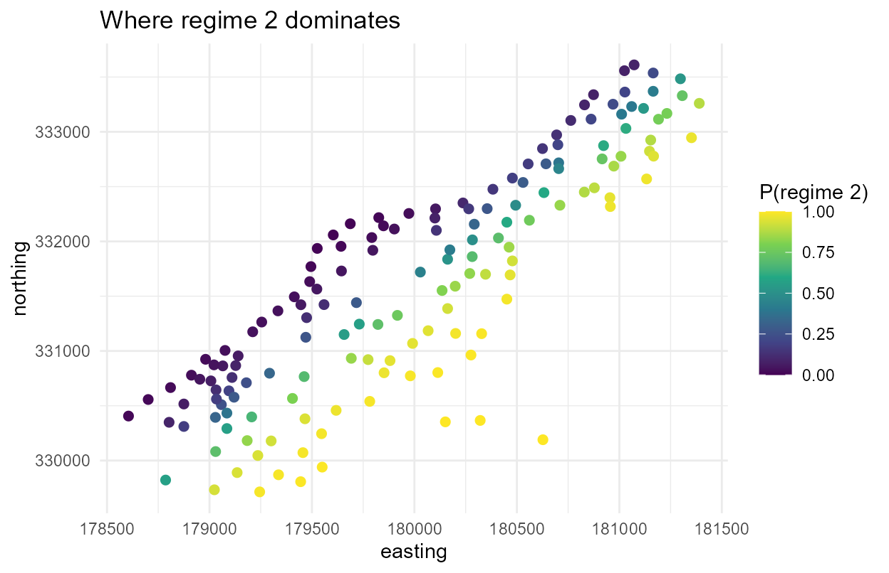
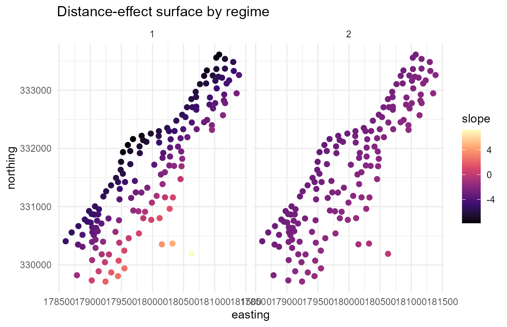

Mixtures and spatially varying effects (gate and slope surfaces)
Source:vignettes/articles/spmixqr-mixtures.Rmd
spmixqr-mixtures.RmdThis primer is for a researcher who has spatial data and a distributional question but no prior exposure to spatial quantile mixtures. It walks from the question to a reproducible report, using a built-in version of the Meuse river soil dataset.
1. The question
Soil zinc near the river Meuse is contaminated unevenly. Two questions a mean regression cannot answer:
- How does a quantile of contamination (here the
median, though any
tauworks, including the upper tail) respond to distance from the river, and does that response change across the flood plain? - Are there latent regimes, patches that behave like a different contamination process, and where are they?
spmixqr answers both at once. It splits the area into
latent regimes whose membership drifts smoothly over space, fits a
quantile regression in each, and lets each regime’s covariate effect be
a spatial surface.
2. The model in one page
For a chosen quantile level
(say the 0.9 upper tail), each observation belongs to one of
latent regimes. The probability of regime
at location
is a smooth spatial surface, a softmax of a spatial basis (the
gate). Within regime
,
the
-th
conditional quantile of the response is a linear predictor whose slopes
vary over space:
The intercept
is a scalar. Spatial level variation is carried by the gate, since a
free spatial intercept surface is not separately identified from it.
Estimation is a penalised EM that reuses the mixqr
quantile-regression core (Wu and Yao 2016)
for the components and a spatially penalised multinomial-logit gate
(Fernández and Green 2002; Beraha et al.
2021). The component step uses a convolution-smoothed check loss
(Fernandes, Guerre, and Horta 2021; Tan, Wang,
and Zhou 2022) so a roughness penalty can be applied. The
single-regime case is a penalised spatially-varying-coefficient quantile
regression in the lineage of Reich, Fuentes, and
Dunson (2011).
3. The data
data(meuse_zinc)
meuse_zinc$lzinc <- log(meuse_zinc$zinc)
str(meuse_zinc)
#> 'data.frame': 155 obs. of 7 variables:
#> $ zinc : int 1022 1141 640 257 269 281 346 406 347 183 ...
#> $ dist : num 0.00136 0.01222 0.10303 0.19009 0.27709 ...
#> $ elev : num 7.91 6.98 7.8 7.66 7.48 ...
#> $ ffreq: Factor w/ 3 levels "1","2","3": 1 1 1 1 1 1 1 1 1 1 ...
#> $ x : int 181072 181025 181165 181298 181307 181390 181165 181027 181060 181232 ...
#> $ y : int 333611 333558 333537 333484 333330 333260 333370 333363 333231 333168 ...
#> $ lzinc: num 6.93 7.04 6.46 5.55 5.59 ...lzinc is log zinc (ppm); dist is normalised
distance to the river; x, y are coordinates.
Zinc is right-skewed and decays with distance, but the rate of
decay plausibly differs across the plain.
4. Fitting your first model
We model the conditional median
()
of log zinc as a function of distance, with two spatial regimes. Refit
with tau = 0.9 to study the upper tail.
fit <- spmixqr(lzinc ~ dist, data = meuse_zinc, coords = c("x", "y"),
G = 2, tau = 0.5, variance = "sandwich",
control = spmixqr_control(nstart = 5L, k = 15L, seed = 1))
#> Warning in spmixqr(lzinc ~ dist, data = meuse_zinc, coords = c("x", "y"), :
#> slope surfaces cross at 26% of locations: a single global label is only
#> approximately coherent (see ?spmixqr Details).
fit
#> Spatial mixture of quantile regressions (spmixqr)
#> G = 2 regimes, tau = 0.5, method = ald
#> spatial gate: TRUE spatial slopes: TRUE basis: tp (r=14)
#>
#> Constant component coefficients (intercept + average slopes):
#> regime1 regime2
#> (Intercept) 6.9016 6.0256
#> dist -3.4542 -2.3316
#>
#> logLik = -72.07 edf = 14.87 AIC = 173.9 BIC = 219.2
#> note: slope surfaces cross at 26% of sites (label coherence approximate).The fit reports a label_stability of about 0.26: the two
regimes’ distance-effect surfaces cross at roughly a quarter of
locations, so the global “regime 1 / regime 2” labels are coherent
across most, but not all, of the plain. Section 9 returns to this; read
the maps below with that caveat in mind.
5. Interpreting the estimates
summary(fit)
#> Spatial mixture of quantile regressions (spmixqr)
#> G = 2, tau = 0.5, method = ald
#>
#> -- Component regime1 (constant part) --
#> Estimate Std. Error z value Pr(>|z|)
#> (Intercept) 6.90158 0.05238 131.75 <2e-16 ***
#> dist -3.45419 0.24171 -14.29 <2e-16 ***
#> ---
#> Signif. codes: 0 '***' 0.001 '**' 0.01 '*' 0.05 '.' 0.1 ' ' 1
#>
#> -- Component regime2 (constant part) --
#> Estimate Std. Error z value Pr(>|z|)
#> (Intercept) 6.0256 0.1325 45.475 < 2e-16 ***
#> dist -2.3316 0.4725 -4.935 8.03e-07 ***
#> ---
#> Signif. codes: 0 '***' 0.001 '**' 0.01 '*' 0.05 '.' 0.1 ' ' 1
#>
#> -- Spatial gate (covariate log-odds vs regime1) --
#> regime2 vs regime1:
#> Estimate Std. Error z value Pr(>|z|)
#> (Intercept) 0.0830 0.1923 0.432 0.666
#>
#> SE method: sandwich (classification-conditional; use variance='boot' for reporting)
#> logLik -72.07 edf 14.87 AIC 173.9 BIC 219.2
#> converged TRUE | starts 5 | gate cond 3462.0 | mean class entropy 0.26
#> label stability: slope surfaces cross at 26% of sitesEach regime has its own intercept (overall contamination level) and an average distance slope. A steep negative slope means zinc falls quickly away from the river; a flat slope means a regime where distance barely matters (persistent contamination). The gate block reports any gating-covariate effects; here the spatial field does the work, so read the gate as a map (next section), not a coefficient.
6. Getting the uncertainty right
Two cautions are built in. The asymmetric-Laplace likelihood is a working likelihood, and the sandwich standard errors above are classification-conditional: they treat the regime labels as known, so they tend to be optimistic. For reporting, prefer the spatial-block bootstrap, which refits the whole pipeline and aligns labels across replicates:
fit_boot <- spmixqr(lzinc ~ dist, data = meuse_zinc, coords = c("x", "y"),
G = 2, tau = 0.5, variance = "boot",
control = spmixqr_control(nstart = 5L, k = 15L, seed = 1,
boot_B = 200L, boot_block = 3L))7. The headline question, answered
Does the distance effect on the median vary across space? The slope surface answers it directly.
cs <- coef_surface(fit, covariate = 1)
tapply(cs$slope, cs$regime, function(s) round(range(s), 2))
#> $`1`
#> [1] -7.80 7.18
#>
#> $`2`
#> [1] -3.29 -0.14A wide slope range means the distance effect is genuinely spatial within that regime, not a single number.
8. Reading the fit in pictures
library(ggplot2)
theme_set(theme_minimal(base_size = 11))
gs <- gate_surface(fit)
ggplot(subset(gs, regime == "2"), aes(coord1, coord2, colour = prob)) +
geom_point(size = 2) +
scale_colour_viridis_c(limits = c(0, 1)) +
labs(title = "Where regime 2 dominates", x = "easting", y = "northing",
colour = "P(regime 2)")
ggplot(cs, aes(coord1, coord2, colour = slope)) +
geom_point(size = 2) + facet_wrap(~ regime) +
scale_colour_viridis_c(option = "magma") +
labs(title = "Distance-effect surface by regime", x = "easting", y = "northing")
9. Diagnostics: can you trust it?
d <- fit$diagnostics
c(converged = d$converged, starts = d$n_starts,
gate_cond = round(d$gate_cond, 1),
class_entropy = round(d$class_entropy, 2),
label_stability = round(d$label_stability, 2))
#> converged starts gate_cond class_entropy label_stability
#> 1.00 5.00 3462.00 0.26 0.26class_entropy near 0 means confident classification;
near 1 means overlapping regimes. label_stability is the
fraction of locations where the regime slope surfaces cross: a high
value warns that a single global label is only approximately coherent
across space (a known v1 limitation). Here it sits near 0.26.
A negative control. When there is no spatial structure, the method should report none. We simulate a constant gate and flat slopes, then check that the gate surface stays flat:
nc <- sim_spmixqr(n = 200, gate_slope = 0, coef_slope = 0, seed = 7)
fit_nc <- spmixqr(y ~ x, nc$data, coords = nc$coords, G = 2, tau = 0.5,
lambda_gate = 10, lambda_coef = 10, variance = "none",
control = spmixqr_control(nstart = 4L, seed = 1))
g_nc <- gate_surface(fit_nc)
round(sd(g_nc$prob[g_nc$regime == "2"]), 3) # small => no manufactured structure
#> [1] 0.05810. Practical guidance and pitfalls
-
Keep
Gsmall (2–3). Spatial mixtures are data-hungry, and label coherence degrades as regimes proliferate. - Standardise coordinates. This is handled internally, but supply coordinates on a sensible common scale.
-
Choose the smoothing with
spmixqr_select()(BIC or cross-validated check loss) rather than guessinglambda_gate/lambda_coef. - Report bootstrap intervals, not the sandwich, for inference.
- Watch the
label_stabilitywarning: crossing slope surfaces mean the regime identities are not globally fixed.
11. How spmixqr relates to other tools
quantreg fits one quantile regression with no spatial
structure; mixqr adds latent regimes but fixed mixing;
mixqrgate lets mixing depend on covariates.
spmixqr makes the mixing spatial and the component
effects spatial surfaces. No maintained R package fits spatial
quantile regression (BSquare and McSpatial are
archived), so the single-regime case fills that gap too (Reich, Fuentes, and Dunson 2011).
12. Reporting and reproducibility
list(tau = fit$tau, G = fit$G,
intercepts = round(fit$beta_const[1, ], 2),
avg_slopes = round(fit$beta_const[2, ], 2),
bic = round(fit$bic, 1))
#> $tau
#> [1] 0.5
#>
#> $G
#> [1] 2
#>
#> $intercepts
#> [1] 6.90 6.03
#>
#> $avg_slopes
#> [1] -3.45 -2.33
#>
#> $bic
#> [1] 219.2A spatial quantile mixture turns “how does contamination respond to distance” into a map of regime-specific tail responses. Through the diagnostics and the negative control, it declines to invent structure the data do not support.